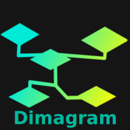

Dimagram
Dimagram (the name will change at some point) is a tool to create diagrams from text input. All you have to do is write a text file with markup in a super simple markup language and compile this file to an image.
Evorsio is a small studio consisting of a single person that creates software for the sake of self expression and leisure. Person involved in such activity we call a techical artist contrary to a programmer, because they don't solve real problems, but express themselves through art of programming. Here we create wierd software that exists for whatever reason but was fun to develop.
Dimagram (the name will change at some point) is a tool to create diagrams from text input. All you have to do is write a text file with markup in a super simple markup language and compile this file to an image.
Glazer is a complementary program for dimagram to generate ER diagrams from SQL database schema
FastCounting is a game to train to count fast without calculators written with NodeJS.
PosePlugin - is powerful open-source plugin that can help you change your pose to whatever you want. There are 8 different poses you're definitely gonna like: laying, sitting, crawling, waving, pointing, handshaking, clapping and praying.